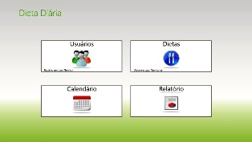
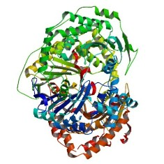

Sobre Mim
Estudante de Engenharia de Computação, aficionado por tecnologia, amante de música.
Projetos
Realizados
Dieta Diária
Projeto desenvolvido para o curso Student to Business. Foi criado um app para Windows 8 para controle e organizaçao de uma dieta, de forma que o usuário possa acompanhar sua alimentação ao longo de um mês seguindo uma dieta previamente prescrita. Melhoramento no algoritmo de comparação de proteínas
Como trabalho de conclusão de curso foi desenvolvido um método de comparação de proteínas para que possa ser usado como melhoramento dos algoritmos de sobreposição existentes. Futuros
Ingressar no mercado de trabalho
Inicialmente o interesse é um estágio como forma de enriquecimento profissional e posteriormente a atuação em uma empresa de tecnologia.Carteira de Motorista
Outro projeto pessoal que será posto em prática é a habilitação para conduzir veículos automotores (CNH). Uma necessidade antiga que agora terá mais tempo para ser realizada.Certificação em Inglês
Uma das principais certificações exigidas atualmente pelo mercado, principalmente na área de tecnologia é a de língua estrangeira. Em um mundo tão conectado e globalizado como o atual é imprescindível ter uma segunda lingua e uma comprovação através da certificação se faz necessária.Currículo
Objetivo Profissional
Ingressar no mercado de trabalho, incialmente desempenhando a função de estagiário, em empresa de tecnologia.Formação Acadêmica
- Técnico em Microinformática - SENAI-MG (Concluído)
- Engenharia de Computação - CEFET-MG (em andamento)
Experiência Profissional
- Manutenção de Computadores e Apoio ao Usuário - CEFET-MG
- Tutor a distância do curso de Informática para Internet - CEFET-MG